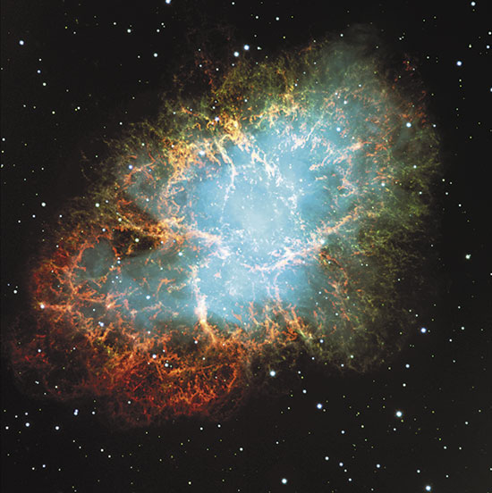

Tipos de Fenómenos Astronómicos
Los fenómenos astronómicos son eventos que ocurren en el espacio.
Algunos de ellos son los siguientes:
Supernovas
Una supernova es una explosión estelar que ocurre cuando una estrella masiva muere o una enana blanca explota.
Es el evento más grande y brillante que se ha observado en el espacio.
Cuásares
Los cuásares son galaxias muy luminosas y lejanas que contienen agujeros negros supermasivos en su centro.
Son los objetos más brillantes del universo, pero se ven débiles debido a su distancia.
Púlsares
Un púlsar es una estrella de neutrones que gira rápidamente y emite radiación electromagnética en forma de haces.
Los púlsares son como faros cósmicos que vemos cuando sus haces cruzan la línea de visión de la Tierra.
Radiación Cósmica de Fondo
La radiación cósmica de fondo es una forma de radiación electromagnética que llena el universo y es remanente del Big Bang.
el evento que se cree marcó el inicio del universo tal como lo conocemos.
Agujeros Negros
Los agujeros negros son regiones del espacio con una gravedad tan intensa que nada puede escapar, ni siquiera la luz.
Son invisibles, pero detectables por su efecto en la materia cercana.